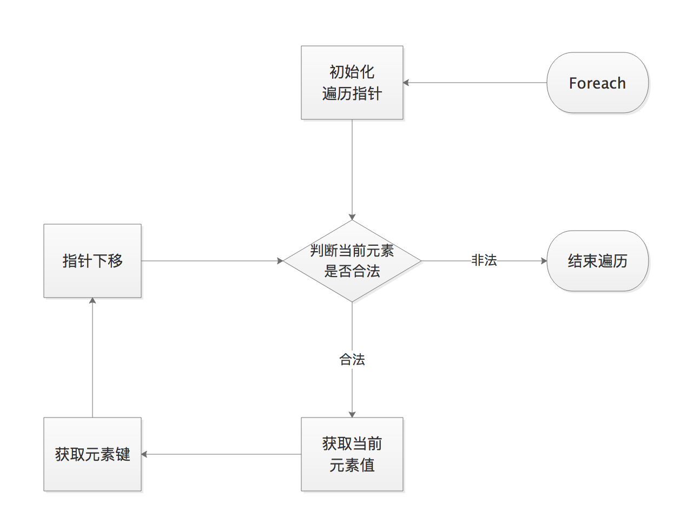
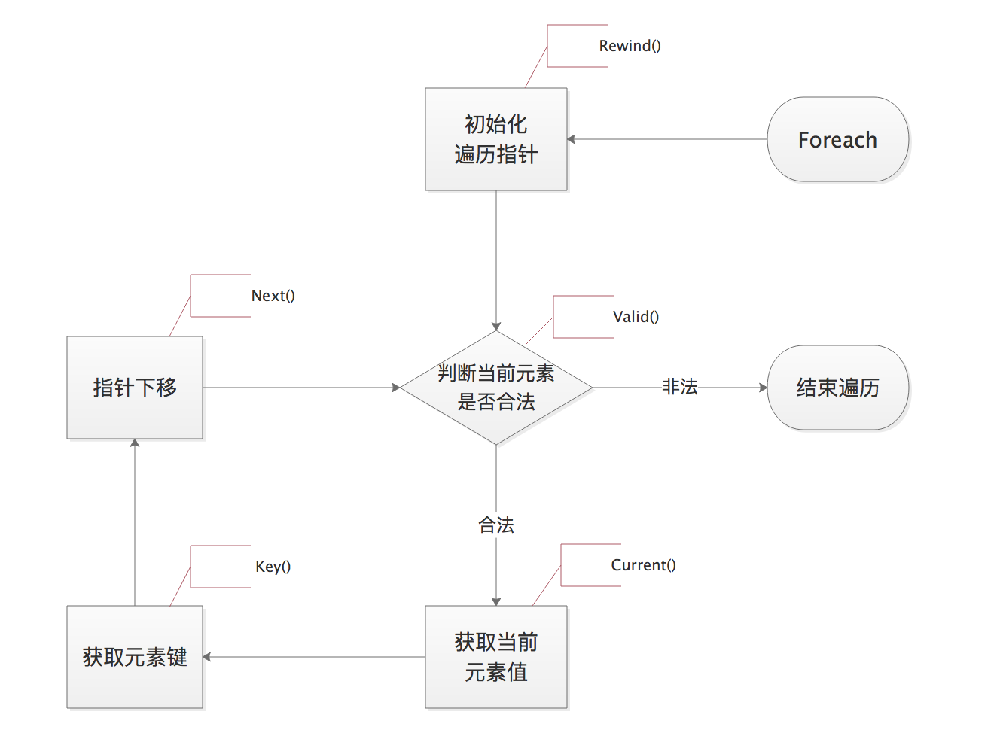

目录
$对象名 = new 类名();
$对象名 = new 类名;new self 和 new parent 创建新对象。成员属性必须要有访问修饰符，如果不写，会报错。
成员属性的默认值为NULL。
示例：
class Test {
public $name; //共有
protected $height; //保护
private $age; //私有
} 成员方法如果不写访问修饰符，则默认为public。
我们可以指定成员方法里的参数的类型，如 类类型，或者数组类型（array），也可以是接口类型，但是接口类型要注意，因为接口没有实例，当我们声明参数类型为接口类型的时候，那么传入的参数只要是实现了该接口的类的实例即可。
示例：
class Test {
function hello() {} //默认为public
public function say() {} //公有
protected function smile() {} //保护
private function laugh() {} //私有
}public function __construct(){},如果我们重写了构造函数，那么我们自定义的构造函数就会覆盖系统默认的构造函数。示例:
class Test {
public function __construct() {
echo 'hello, world<br>';
}
}
$testObj = new Test();
class One {
public function __construct($param) {
echo $param;
}
}
$oneObj = new One('hello, world<br>');输出结果:
hello, world
hello, world示例:
class Test {
public function __construct() {
echo 'hello, world<br>';
}
public function __destruct()
{
echo '执行一些回收资源的操作<br>';
}
}
$testObj = new Test();输出结果:
hello, world
执行一些回收资源的操作public
如果没有为方法指定访问修饰符，它将是public。公有的属性或方法可以在类的内部或外部进行访问。
protected
如果一个属性或方法指定访问修饰符为protected,那么被标记的属性或方法只能在类内部访问，被修饰的属性和方法能被子类继承。
private
如果一个属性或方法指定访问修饰符为private,那么被标记的属性或方法只能在类内部访问，私有的属性和方法将不会被继承。
魔术方法都是在满足某个条件时，由系统自动调用。
魔术方法的名字，都是以两个下划线(__)开头的，因此我们在自定义函数时，函数名不要以两个下划线开头。
一些常用的魔术方法
__construct():
构造方法
__destruct():
析构方法
__set():
在给不可访问属性赋值(比如：protected/private/不存在)时，__set()会被调用。
__get():
读取不可访问属性的值(比如：protected/private/不存在)时，__get()会被调用。
__isset():
当对不可访问属性(比如:protected/private/不存在)调用isset()或empty()时，__isset()会被调用。
__unset():
当对不可访问属性(比如:protected/private/不存在)调用unset()时，__unset()会被调用。
__toString():
当我们把一个对象当做字符串输出时，就会自动调用__stoString（）方法。
__clone():
如果定义了__clone方法，则新创建的对象clone(复制生成的对象)中的__clone()会被调用。用法如下：
$copy_of_object = clone $object;
克隆后的对象与原对象的地址不一样。
当对象被复制后，PHP 5 会对对象的所有属性执行一个浅复制（shallow copy）。所有的引用属性 仍然会是一个指向原来的变量的引用。
如果想防止其他程序员克隆某个对象，可以重写__clone()方法并把访问修饰符设置为private。
__call():
在对象中调用一个不可访问(比如函数访问修饰符为protected/private/不存在)方法时，__call()会被调用。
__callStatic():
用静态方式中调用一个不可访问方法时，__callStatic() 会被调用。当使用比较运算符（==）比较两个对象变量时，比较的原则是：如果两个对象的属性和属性值 都相等，而且两个对象是同一个类的实例，那么这两个对象变量相等。
而如果使用全等运算符（===），这两个对象变量一定要指向某个类的同一个实例（即同一个对象）。
示例:
class Test {
public $name = 'itbsl';
public $age = 25;
}
$testObj = new Test();
$testObj2 = new Test();
if ($testObj == $testObj2) {
echo '相等<br>';
} else {
echo '不相等<br>';
}
$testObj2->name = 'jack';
if ($testObj == $testObj2) {
echo '相等<br>';
} else {
echo '不相等<br>';
}即使父类的某些属性设置为私有的，子类仍然能够继承，但是对子类却是不可见的。当子类对象使用父类的私有属性的时候，会自动触发重载机制，在子类创建一个和父类私有属性同名的属性。此时子类使用的属性并不是父类的私有属性了，而是通过重载创建的和父类私有属性同名的属性罢了。
如果在子类中需要访问其父类的构造方法（ 方法的访问修饰符是public/protected）可以使用父类::方法名(或者 parent::方法名)来完成。（推荐使用parent::方法名，并且一般调用父类构造方法都是parent::__construct();）
调用父类的普通方法直接用this->方法名即可。（也可以用父类名::方法名或者 parent::方法名 ，但是不推荐）
继承并不是直接把父类的属性和方法直接拷贝到子类里面来。而是建立了一种关联。原本我以为是直接把父类的属性和方法直接拷贝过来，最后发现只是建立了一种关联。下图证明了不是直接拷贝，当在子类里调用父类的方法时，父类输出自己的属性时输出结果都和初始化不一样了（private属性除外，因为是私有的，子类无法看见，所以子类也无法重写父类的私有属性），如果是直接拷贝的话，那么当调用父类的方法时应该输出100,200,300才对，所以说继承不是直接拷贝。
class A {
public $num1 = 100;
protected $num2 = 200;
private $num3 = 300;
public function show1() {
echo 'num1 = ' . $this->num1 . '<br>';
}
public function show2() {
echo 'num2 = ' . $this->num2 . '<br>';
}
public function show3() {
echo 'num3 = ' . $this->num3 . '<br>';
}
}
class B extends A {
public $num1 = 1;
protected $num2 = 2;
private $num3 = 3;
public function show1() {
echo 'num1 = ' . $this->num1 . '<br>';
parent::show1();
}
public function show2() {
echo 'num2 = ' . $this->num2 . '<br>';
parent::show2();
}
public function show3() {
echo 'num3 = ' . $this->num3 . '<br>';
parent::show3();
}
}
$bObj = new B();
$bObj->show1();
$bObj->show2();
$bObj->show3();输出结果：
num1 = 1
num1 = 1
num2 = 2
num2 = 2
num3 = 3
num3 = 300PHP所提供的"重载"（overloading）是指动态地"创建"类属性和方法。我们是通过魔术方法（magic methods）来实现的。
当调用当前环境下未定义或不可见的类属性或方法时，重载方法会被调用。本节后面将使用"不可访问属性（inaccessible properties）"和"不可访问方法（inaccessible methods）"来称呼这些未定义或不可见的类属性或方法。
属性重载只能在对象中进行。在静态方法中，这些魔术方法将不会被调用。所以这些方法都不能被声明为 static。从 PHP5.3.0 起, 将这些魔术方法定义为 static 会产生一个警告。
所有重载方法都必须被声明为public。
这些魔术方法都参数都不能通过引用传递。
PHP中的"重载"与其它绝大多数面向对象语言不同。传统的"重载"是用于提供多个同名的类方法，但各方法的参数类型和个数不同。
因为PHP处理赋值运算的方式，__set()的返回值将被忽略。类似的，在下面这样的链式赋值中，__get()不会被调用。
$a = $obj->b = 8;在除 isset() 外的其它语言结构中无法使用重载的属性，这意味着当对一个重载的属性使用 empty() 时，重载魔术方法将不会被调用。
为避开此限制，必须将重载属性赋值到本地变量再使用 empty()。
//在对象中调用一个不可访问方法时，__call() 会被调用。
public mixed __call(string $name , array $arguments)
//用静态方式中调用一个不可访问方法时，__callStatic() 会被调用。
public static mixed __callStatic(string $name , array $arguments)我们曾经提过，当我们访问或给一个不可访问(protected/private)的属性或者不存在的属性赋值时，就会调用相应的系统魔术方法__get($property)、__set($property, $value)，如果我们不重写这两个方法，当我们给不存在的属性赋值时，系统会自动帮我们创建一个public的属性，我们可以自己重写这两个方法来管理这些这些动态创建的属性。或者直接不让产生动态属性。当我们不重写这两个方法就不可访问属性赋值时，会报致命错误。
示例：
class Obj {
protected $name = 'itbsl';
}
$obj = new Obj();
$obj->name = "jack"; //此处会报致命错误
var_dump($obj);错误信息为:
Fatal error: Uncaught Error: Cannot access protected property Obj::$name当我们重写了__set()方法就没问题了
class Obj {
protected $str = 'itbsl';
public function __set($name, $value)
{
$this->$name = $value;
}
}
$obj = new Obj();
$obj->str = "jack";
var_dump($obj);属性重载可以帮助我们动态管理新的属性也可以禁止动态创建属性。
(1)动态管理
class Dog {
//定义一个数组，管理我们动态增加的属性和值
private $arr = [];
//这里我们重写__set来管理动态增加的属性
public function __set($name, $value)
{
$this->arr[$name] = $value;
}
public function __get($name)
{
return isset($this->arr[$name]) ? $this->arr[$name] : null;
}
}(2)禁止创建动态属性。重写set方法，里面什么也不做。
class Dog {
//这里我们重写__set来管理动态增加的属性
public function __set($name, $value)
{
//just do nothing
}
}在子类中重写父类的方法时要，重写的方法的访问控制符不能比父类的方法的访问控制符的级别小。例如：如果父类的访问控制符为public，则子类重写方法的访问修饰符只能为public，如果父类的为protected，则子类的访问修饰控制符可以为protected或public。重写属性也要遵守上面的规则。
如果子类有和父类相同的属性，如果属性是public或者protected则会重写父类的属性，如果是private则创建一个同名的新私有属性，同时仍然会继承父类的同名私有属性。
self::$静态属性。类名::$静态属性(要求访问修饰符为public)。类名::静态方法名(); 同时也可以用对象名->静态方法名();和对象名::静态方法名()，但是后两种不推荐，尽量只用第一种。self::静态方法 或者 类名::静态方法 通过$this也可以。只推荐第一种方式。在类的内部访问静态方法，无论是什么修饰符都可以访问静态方法。静态属性和普通属性的区别：
(1)加上static称静态变量，否则就是普通属性
(2)静态属性是与类相关的，所有对象共享的属性
(3)普通属性属于每个对象个体的属性。
由于PHP变量没有类型限制，所以PHP是天生支持多态的。
类型约束支持的类型有 array 、 callable 、 对象类型 、 接口
当父类的一些方法不能确定时，可以用abstract关键字来修饰该方法[抽象方法],用abstract来修饰该类[抽象类]。
(1) 如果你希望把某个方法做成 抽象方法 ，则前面写上 abstract
(2) 如果一个类中有抽象方法，那么该类必须声明为抽象类。
(3) 抽象类最主要的作用在于设计，它的目的是让其它的类继承它，并实现其中的抽象方法。如果子类继承了该抽象类，除非继承该抽象类的子类也被声明为抽象类，否则必须实现抽象类中所有的抽象方法，如果不实现就会报错。
(4) 抽象类不能被实例化
(5) 抽象类可以没有abstract方法
(6) 抽象类可以有非抽象方法，成员属性和常量
(7) 抽象方法不能有函数体
基本语法:
abstract class 类名 {
abstract 修饰符 function 函数名(参数列表);
}普通类如何继承抽象类？
abstract class Superman {
public $name;
public $age;
public function __construct($name, $age) {
$this->name = $name;
$this->age = $age;
}
abstract public function run();
abstract public function fly();
abstract public function attach();
}
class Spiderman extends Superman {
public function run()
{
echo 'Spiderman is running on the net.<br>';
}
public function fly()
{
echo 'Spiderman can hang in the sky through net.<br>';
}
public function attach()
{
echo 'Spider attach.<br>';
}
}(1) 接口就是给出一些没有实现的方法，封装到一起，到某个类要使用的时候，再根据具体情况把这些方法写出来。
(2)基本语法：
interface 接口名 {
//方法[不含方法体]
}(3)接口中所有的方法都不能有主体
(4)一个类可以实现多个接口，接口名之间用逗号隔开
class 类名 implements 接口1, 接口2 {
}(5)接口中可以有属性，但只能是常量，并且是公开可访问的。默认是public，但不能用public显式修饰
(6)接口中的方法都必须是public的，默认就是public
(7)一个接口不能继承其它的类，但是可以继承别的接口，而且一个接口可以继承多个接口
interface 接口名 extends 接口1, 接口2 {
//方法[不含方法体]
}(8)接口不能被实例化
(9)接口是更加抽象的抽象类，接口里的所有方法都没有方法体。接口体现了程序设计的多态和高内聚低耦合的设计思想。
(10)说明：
接口的命名规范一般是字符 i 开头，然后第二个字符大写，形式如：iXxxx，比如：iUsb
(11)如何使用接口中的常量
接口名::常量名；
如果某个类要实现接口，需要用implements 关键字。并且实现接口里的所有方法，如果该类要实现多个接口，则所有的接口的所有的方法都要实现，只要存在没有实现的接口里的方法就会报错。
示例:
interface Displayable {
function display();
}
class Base {
function operation() {
echo 'operate something.<br>';
}
}
class SubClass extends Base implements Displayable {
function display()
{
echo 'display.<br>';
}
}
$temp = new SubClass();
$temp->display();(1) 作用：
因为安全的考虑，类的某个方法不允许子类通过重写来修改。
不希望某个类被其它的类继承。
(2) PHP5新增了一个final关键字。如果父类中的方法被声明为final，则子类无法覆盖该方法。如果一个类被声明为final，则该类不能被继承。
(3) final不能够修饰成员属性(变量)
(4) final方法不能被重写，但可以被继承。即使是被声明为final的方法也依然能够被继承并被使用，只是不能重写(修改)罢了。
(5) 一般来说，final类中不会出现final方法，因为final类都不能被继承，也就不会去重写override final类的方法了。
(6) final类是可以被实例化的。
可以把在类中始终保持不变的值定义为常量。在定义和使用常量的时候不需要使用 $ 符号。
常量的值必须是一个定值，不能是变量、类属性、数学运算的结果或函数调用。
接口（interface）中也可以定义常量。更多示例见文档中的接口部分。
自 PHP 5.3.0 起，可以用一个变量来动态调用类。但该变量的值不能为关键字（如 self，parent 或 static）。
细节说明：
(1) 常量名一般字母全部大写：TAX_RATE，中间可以有下划线
(2) 在定义常量的同时，必须赋初值，比如 const TAX_RATE = 1.1
(3) const关键字前不能用public/protected/private修饰。默认是public
(4) 访问常量
在类的外部 类名::常量名 接口名::常量名
在类的内部 类名::常量名 self::常量名
(5) 常量的值在定义的时候就初始化，以后就不能修改
(6) 常量可以被子类继承
(7) 一个常量是属于一个类的，而不是某个对象的。
(8) 常量是全局性的，可以在任何地方访问。
(9) 在类里面不能用define定义常量。
(10) 常量的值可以是基本类型数据和数组。不可以是对象。
foreach用法和之前的数组遍历是一样的，只不过这里遍历的key是属性名，value是属性值。在类外部遍历时，只能遍历到public属性的，因为其它的都是受保护的，类外部不可见。
示例:
class HardDiskDrive {
public $brand;
public $color;
public $cpu;
public $workState;
protected $memory;
protected $hardDisk;
private $price;
public function __construct($brand, $color, $cpu, $workState, $memory, $hardDisk, $price) {
$this->brand = $brand;
$this->color = $color;
$this->cpu = $cpu;
$this->workState = $workState;
$this->memory = $memory;
$this->hardDisk = $hardDisk;
$this->price = $price;
}
}
$hardDiskDrive = new HardDiskDrive('希捷', 'silver', 'tencent', 'well', '1T', 'hard', '$456');
foreach ($hardDiskDrive as $property => $value) {
var_dump($property, $value);
echo '<br>';
}输出结果为:
string(5) "brand" string(6) "希捷"
string(5) "color" string(6) "silver"
string(3) "cpu" string(7) "tencent"
string(9) "workState" string(4) "well" 如果我们想遍历出对象的所有属性，就需要控制foreach的行为，就需要给类对象，提供更多的功能，需要继承自Iterator的接口:
该接口，实现了foreach需要的每个操作。foreach的执行流程如下图：

看图例中，foreach中有几个关键步骤：5个。
而Iterator迭代器中所要求的实现的5个方法，就是用来帮助foreach,实现在遍历对象时的5个关键步骤：
当foreach去遍历对象时, 如果发现对象实现了Ierator接口, 则执行以上5个步骤时, 不是foreach的默认行为, 而是调用对象的对应方法即可:

示例代码:
class Team implements Iterator {
//private $name = 'itbsl';
//private $age = 25;
//private $hobby = 'fishing';
private $info = ['itbsl', 25, 'fishing'];
public function rewind()
{
reset($this->info); //重置数组指针
}
public function valid()
{
//如果为null,表示没有元素，返回false
//如果不为null,返回true
return !is_null(key($this->info));
}
public function current()
{
return current($this->info);
}
public function key()
{
return key($this->info);
}
public function next()
{
return next($this->info);
}
}
$team = new Team();
foreach ($team as $property => $value) {
var_dump($property, $value);
echo '<br>';
}如果我们希望把一些数据，以对象的属性的方式存储，同时我们又不想定义一个类，可以考虑使用PHP内置标准类stdClass[standard标准]
基本用法：
//注意: stdClass()不是我们自定义的类，而是PHP内置的
$person = new stdClass();然后我们就可以直接用$person->属性的方式来使用，属性都不是系统的，我们自己也没定义，但是当我们使用这个属性的时候，系统发现没有定义就会调用重载方法，重载这个属性。自动帮我们创建这个属性。
如果，我们希望把非对象类型转换成对象，可以通过如下方法实现，(object)来强制转换，把这些数据转换成标准内置类stdClass，此种转换不改变原有数据类型